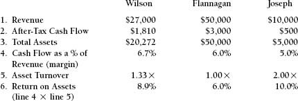

CHAPTER SEVEN

Using Return on Assets to Measure Profit Centers
The use of return on assets is extremely valuable in the management of profit centers. A profit center is a business entity that is dedicated to a specific market, distribution channel, or set of customers. It has its own strategy and perhaps even its own business model, the one that is best suited to making that type of business successful and profitable. These profit centers may be called strategic business units (SBUs). Each has its own balance sheet, for which the unit’s management is responsible.
These businesses need not be legal entities, nor do they need to have complete balance sheet responsibility. In many cases, SBUs are responsible only for the asset side of the balance sheet. The corporate parent remains responsible for the liabilities and any stockholder issues. The SBU’s mandate is to achieve a profit and to use the assets for which it is responsible with maximum effectiveness.
The analytical model for return on assets that we are going to use is called the DuPont formula. Its roots go back at least 75 years. But its age does not diminish its value. In fact, its durability says much about its usefulness. The formula can be found in the archives of the DuPont Chemical Company. However, like most analytical techniques, it was probably an adaptation of other formulas that existed before its time. Nothing is totally new. Techniques and formulas evolve and are adapted over time to take advantage of newer ideas and business developments. The formula for return on assets (ROA) is:
It is summarized here, and we will then analyze it in detail.
- Assets: The profitability of any business depends on how much money is invested in the business.
- Revenue: The amount of revenue that is generated with those assets.
- Revenue (again): The represents the same amount of revenue generate.
- After-tax cash flow: How much cash remains after taxes and all expenses are paid.
In the calculation of ROA, revenue (#2) and revenue (#3) cancel out resulting in the simplified ROA formula:
Assets
The profitability of any business is certainly affected by the amount of assets that are dedicated to that business. These assets include cash, accounts receivable, inventory, and fixed assets.
Cash
The size of the working cash balances needed by the business depends on its managers’ overall ability to predict and manage cash inflows and outflows. In some larger companies, profit centers do not manage their cash balances at all. Instead, cash is consolidated at the corporate level to provide a maximum return on the cash invested. The SBUs will be provided with cash as needed.
Accounts Receivable
What are the credit terms that the SBU offers when it sells its products or services to its customers? The answer to this question depends on the type of business the SBU is in and the competitive environment. The accounts receivable on the SBU’s books will also be affected by how well the SBU communicates these credit terms to its customers and how effectively it enforces those policies.
Inventory
There are a multitude of issues that affect this investment, including supply-chain management, how vertically integrated the operation is, and how efficiently the operation is run.
The degree of vertical integration refers to how much of the overall production process is done by the company itself rather than being outsourced. The more vertically integrated the business is, the greater the amount of the value-adding process that is performed by the company. A vertically integrated oil company drills for petroleum, owns and operates the pipelines and refineries, stores the finished product, and has a major chain of retail gas stations on our nation’s highways. In contrast, there are companies that own and operate chains of retail gas stations, purchasing the gasoline they sell from outside sources—perhaps from distributors, but often from the fully integrated oil companies. (Yes, they may buy from their competitors.) Generally, with some exceptions, the more vertically integrated the company’s operations are, the more inventory investment it will have for longer periods of time.
Fixed Assets
The previous discussion of vertical integration discussion also applies to the business’s investment in fixed assets. A company that is vertically integrated will require a tremendous investment in fixed assets and a commitment to maintaining them.
The type of business a company is in and how the company chooses to conduct that business will also greatly affect its investment in fixed assets. A three-shift operation requires less equipment than a two-or one-shift operation producing the same amount. The question, then, is: Why would a company run a one-shift operation, with all the extra equipment it requires, when it can operate with less equipment on a three-shift basis? The answer is that it would not unless other factors were involved.
A three-shift operation is most applicable to a machine-driven mass-production operation where the products are the same or similar and value-added labor input is not that critical. Examples are chemical, steel, and paper companies. A business that requires very highly skilled labor or that requires extensive supervision may be most profitable if it runs a one-shift operation. There may not be enough high-quality labor or supervision available to operate around the clock. Custom-designed products require considerable management attention. Also, the businesses for which around-the clock operations are desirable are often those for which it is prohibitively expensive to stop the machines, and so they must run continuously. A steel furnace cannot be economically shut down at 5 p.m. and restarted the next morning. If a chemical plant were shut down, it would take weeks to clean up the kettles before they could be restarted, and it could be done that quickly only if the exact same mixture was being produced.
Three-shift operations can be very efficient if the quality and efficiency of the process is consistent. When very highly skilled workers are required, the efficiency and quality of the work done on the second and third shifts might be unacceptable. Every factor affecting the decision to run a one-, two-, or three-shift operation will have an impact on the product’s profit margin. It is in evaluating this issue and making this and other similar decisions that the DuPont formula is so valuable, as we shall see.
The 2015 automobile manufacturing business is highly technologically sophisticated, employing advanced technology and robotics. Because production operations are so technology-driven, these manufacturing companies are able to use a three-shift operation with great success. They also avoid the inefficiencies associated with a one-shift operation. The old automobile manufacturers were notorious for their inconsistent quality. When operations were labor-driven, quality was highest on cars made Tuesday to Thursday and lowest on cars made on Fridays. Friday was the day of highest labor absenteeism, when temporary, less skilled workers were used. The absenteeism manifested itself in quality differentials, well known to senior management and eventually the public.
Revenue
Given the assets dedicated to the profit center, how much business can it generate? The issues here include efficiency, how much value added is built into the product, and how much of the process is outsourced. Companies that outsource the total production process, such as warehouse distributors, can expand their revenues significantly with minimal additional investment in fixed assets. Only inventory and accounts receivable will need to be increased to produce the higher revenue.
After-Tax Cash Flow (ATCF)
Given the revenue generated by the business, how much profit is achieved? This is related to the type of business, economies of scale, capacity utilization, and operating efficiencies. It is greatly affected by the degree of vertical integration and value-added processes.
Return on Assets: Its Components
The return on assets ratio is really a combination of two ratios: revenue/assets and ATCF/revenue.
Revenue/assets is called asset turnover. It is conceptually the same as inventory turnover, except that it encompasses all assets. The second ratio, ATCF/revenue, is known as the margin. Multiplying asset turnover times margin yields the return on assets. The value of the DuPont formula far exceeds its individual components, however. Many business decisions cause the two ratios, asset turnover and margin, to move in opposite directions. So not only are the two ratios valuable tools for measuring the performance of the SBU, but they also give the managers of the SBU a tool that they can use in making decisions.
Here are some examples:
- Outsourcing improves turnover but reduces the margin, as profit that was formerly kept in-house now must be paid to the supplying vendor.
- Vertical integration improves margins because the company keeps the profit that is achieved at each step of the operation. However, asset turnover declines because additional equipment will be needed to produce the product.
- Continuous 24-hour operation reduces the amount of equipment needed; hence asset turnover improves. Interestingly, margins may also improve because having fewer machine start-ups may improve efficiency. However, if sales don’t keep pace with the continuous output, inventory may build up dangerously, and margins may then deteriorate as a result of price cutting to get the product out the door.
Using the DuPont formula helps in the two main business activities:
- Measuring performance
- Management decision making
However, it does not make the decision. Valuable as it may be, it is merely a tool. Management must make its judgments based on what the expected result will be if the decision is made.
As the next phase of developing the use of this tool, we will look at three SBUs within a company in order to get a better understanding of the DuPont formula. Their respective results for the past year are given in Exhibit 7-1.
Line 1: Revenue. All three businesses achieved significant revenue gains in the most recent year. The Flanagan Company is the largest of the three, with $50 million in annual revenues, while the Joseph Company is the smallest, with revenues amounting to $10 million.
Line 2: After-tax cash flow. This is each business’s net income plus depreciation expense, which is added back to calculate the cash flows generated.
Line 3: Total assets. This identifies the total assets dedicated to each business. Ideally, common property is excluded from this measure and no overhead expenses are allocated to the individual businesses.
Exhibit 7-1. Measurement of Profit Centers Using Return on Assets ($000)

Line 4: Margin. This is ATCF/revenue. As we have discussed, this measures efficiency and reflects all of the operating decisions made by the SBU management team. Notice that Wilson has the highest (which does not necessarily mean the best) margin.
Line 5: Asset turnover. All three of these businesses are quite asset-intensive. Any asset turnover ratio below 2.0 indicates a considerable investment in assets relative to the amount of revenue generated with those assets.
Line 6: Return on assets. This is line 4 multiplied by line 5. It can also be calculated by dividing line 2 by line 3. Wilson has the highest margin (line 4) and an asset turnover of 1.33. Its asset intensiveness is compensated for by the higher margin.
Corporate management now has a tool that it can use to evaluate the performance of these three SBUs. The SBU management teams also have a decision-making tool that is congruent. The consistent use of this tool provides both clear measurement and an understanding of whether particular decisions will improve the performance of the company.
Let us be very clear that we are not trying to compare the three SBUs with one another. We do not know what businesses they are in or even if they are in related industries. Flanagan Company’s performance within its industry may be superior to Joseph Company’s performance in its industry. The corporate team, however, may use these measures in deciding how much money to allocate to each company in the future.
There are many adaptations of the ROA formula, but they are conceptually the same. Here are some of them:
- Return on capital employed (ROCE)
- Return on invested capital (ROIC)
- Return on assets managed (ROAM)
- Return on net assets (RONA)
In Exhibit 7-1, after-tax cash flow was used. Net income would have been almost as good. Operating income is often used as the measure of achievement. This is helpful if corporate management wants to remove interest expense and taxes from the equation. The premise is that SBUs are not responsible for debt financing or corporate income taxes. Therefore, measurements of them should not include these corporate expenses. Gross profit is a very useful measure when individual products or product lines are being analyzed as profit centers. Some companies and analysts use EBITDA as the measure of operating performance. This is a pretax cash flow number that recognizes that financing and taxes are issues to be dealt with at the corporate level rather than by the SBU.
Sales Territories
The DuPont formula can also be applied to the management of sales territories within a profit center. It gives each sales team the opportunity to make certain decisions in response to the specific competitive pressures that it faces. It allows for dissimilarities of strategy if this is appropriate. Company policies that limit the decisions that the SBUs may make can be developed in order to protect the company. Within these limits, each sales team remains totally accountable for its decisions and performance. A financial relationship is created between the sales organization and the manufacturing operation. In this example, there are three sales territories and one manufacturing entity. To keep the example simple, it is a one-product business. Exhibit 7-2 shows the actual results for a recent year.
- Actual revenue results are reported.
- The sales territories “purchase” the product for a predetermined price of $1.00. This is a market-oriented price that provides the factory with a profit. Within guidelines set by the company, the territory purchases the amounts that it believes it will need. Customer service issues and the size and logistics of the territory have a great deal of impact on that decision.
- The gross profit is reported. Although each territory paid the same purchase price of $1.00 (line 2), the selling prices are different, and therefore the gross profit percentages are also different. The West territory probably sells larger quantities per order, resulting in lower pricing and therefore lower margins. Central has higher margins than the other two territories. This may be explained by superior performance, less competition, or a combination of these factors.
- Territory management expends the funds that it feels are necessary to sell to and service the marketplace. North may have more salespeople and/or may pay higher commissions because of competitive issues. Notice that Central has been charged with bad debts. Because an individual territory may use easier credit terms as part of the marketing mix, it is held accountable if the customers do not pay.
- Profit center earnings are reported. This is:
- Accounts receivable: Each territory is responsible for the credit that it grants to its customers. The corporate accounting department can do all the credit checking and administration, but the territory makes the final decision about a potential customer’s creditworthiness, subject to some debate. Therefore, the territory is held accountable.
- Inventory: Based upon their sales forecast, territories order product from the factory. The sales territories are responsible for their forecasts. The inventory that they have on their books is a combination of products that they have not sold and products that they want available for fast delivery. Territories must determine the amount of inventory that they must maintain in order to keep their level of delivery service competitive. Each territory is responsible for this strategy. This approach does not require sales territories to physically manage the product in the warehouse. It does, however, hold them accountable for the levels and mix of inventory that are maintained on their behalf.
- Total assets: This is the working capital (accounts receivable plus inventory) managed by the territory.
What is accomplished here is:
- A clear measure of achievement
- Strategies that are appropriate for each marketplace
- Limitations on extremes to protect the company
- Accountability for those resources used by each SBU that are identified as being competitively desirable.
Using the DuPont formula, achievement and accountability can now be measured. Management teams have a decision-making tool that can really help them.
9. Margin: Earnings as a percentage of revenue (line 5 divided by line 1
10. Turnover: Revenue/assets (line 1 divided by line 8)
11. Return on assets: Earnings/assets (line 9 multiplied byline 10 or line 5 divided by line 8)
The West territory has the highest return on assets, 31.9 percent. While its margins are lower than those of the other territories, its investment in accounts receivables and inventory is very low. However, while West has a higher ROA, we cannot be sure that it is “better” than the others. There are other issues that need to be considered, including: What is the current market share and potential in each territory? Is North more successful in a very competitive marketplace, while there is less competition in West’s marketplace? The DuPont formula is clearly a valuable profit-oriented resource. It can be a key tool for intelligent sales management.
Notice that the factory is also a profit center. It sells to the sales territories at a predetermined, market-oriented price, so that it is given credit or held accountable for positive or negative efficiencies. The factory is responsible for its own assets and is measured as an SBU by margin, turnover, and return on assets. It is accountable for its own inventory, so that it can plan production runs to maximize its own efficiency.
A Business with No “Assets”
This extension of the Return on Assets discussion focuses on a business that, in an accounting sense, has no assets. Think about a CPA firm, a management consulting firm, or a company that performs pharmaceutical research. The only “accounting assets” may be computers and office furniture. The “real assets” are the billable professionals and their support staff who constitute the value of the business.
The key ratio that helps to evaluate these businesses are different versions of revenue per employee.
We reviewed this ratio earlier in Chapter 6 but it’s worth doing so again in this context.
The simple ratio Billed Revenue per Employee / Total Number of Employees is a function of the value-added nature of the business, the relationship between billable and non-billable employees, and the overall efficiency of the firm.
For each billable employee the firm needs to bill two to three times the total cost of the employee. This covers all direct costs plus overhead plus the firm’s profit.